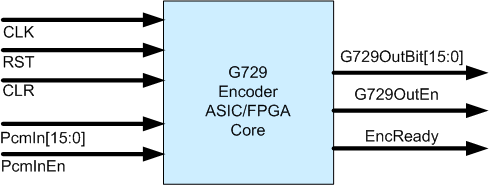

Media Silicon G729 Encoder ASIC/FPGA Core (G729EN-SO1)
The G729-SO1
is hardwired G.729 (CS-ACELP) encoder.
1. Important Features
· All encoding functions implemented at RTL level
·
Gate count 100 K gates plus 5200 bytes data RAM (Altera FPGA 29K logic elements)
·
clock required 20 MHz per channel
· Single clock
synchronous design
·
Straightforward interfaces for SoC applications
· Fully
synthesizable technology independent of verilog RTL code
2. Function Overview
G729-SO1 takes 16 bits PCM bitstream, automatically compress it into G729 bitstream.
3. G729-SO1 top
level interface

Deliverables
· Synthesizable
verilog source code
· Verilog
testbench
Please
email hu@mediasilicon.com for more information